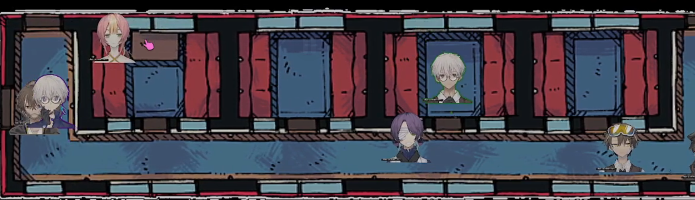
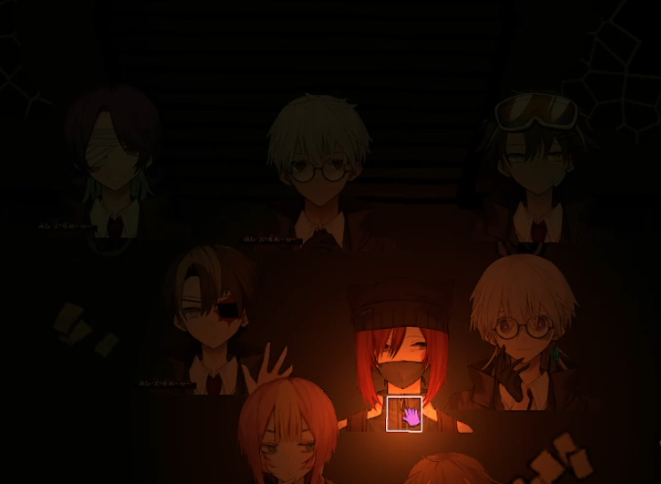
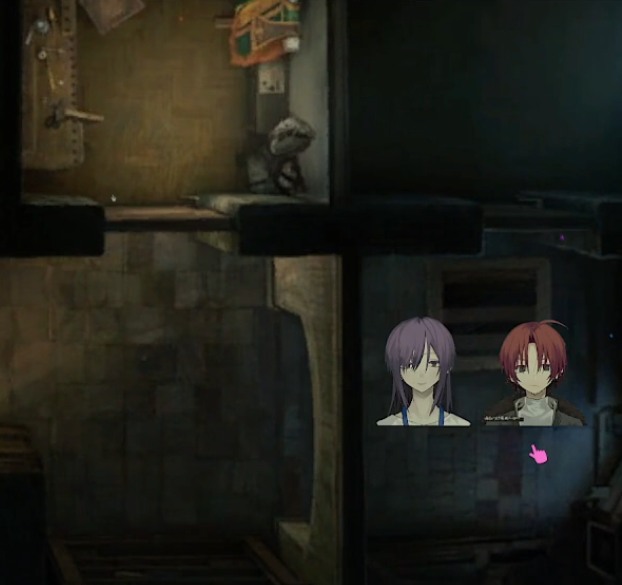
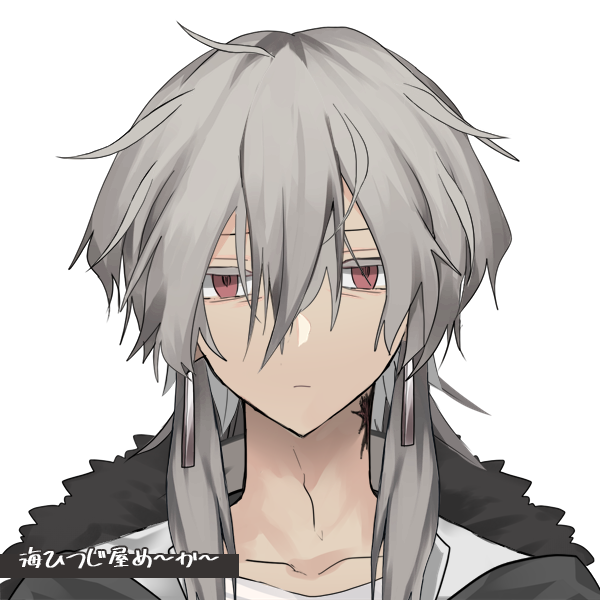

Main Arc
Session 1
This story began in the middle of the forest, it was nighttime. The first character we meet was Navi, a runner in an "underground" protocol inside Region C, who was kidnapped by Kits, a member of the government infiltrated in this protocol, and two goons from the government of Protocol C. Navi followed Kits because he trusted him, only to end up in a life or death situation. Kits proposed a deal to him, Navi would be Kits' informant and rat out everyone and everything happening in the Underground Protocol, to which Navi rejected.
Kits proceeded to pull out a gun and aim it at Navi's head, to frighten him and intimidate him in order for him to accept his offer. But then, a loud train like noise echoed through the woods. Lights glaring from the distance, from which appeared a train. From inside the trained came Ian, Ness, Chuni, Mira, Dent and Ron, members of JPSO. All of them joined the Protocol for different reasons but now they had a goal, a mission. Save Navi. JPSO advanced towards Kits and the goons beating them to a pulp, but Kits managed to get away. Soon JPSO recruited Navi, to aboard the train and complete the deal he signed a while back. Inside the train they also met Scylla, an AI which is the conductor of the Train and also the train itself, inside being a Hyper World.

Inside the Train, Navi went to the back of the line, behind his fellow Sinners. Verdict complained to Chuni about not hurting civilians too much since they are just doing their job, and proceeded to tell everyone that their real first mission would soon begin. After changing to their new outfits, Verdict told them that they would soon be arriving to Colony _ , to explore an abandoned metro station in order to find a "Nucleus", a light-bulb shaped device, but Verdict didn't tell him its function and its purpose, only told them that there would be a runner waiting for them.
The team went to the other carriage and everyone introduced themselves to Navi. There's Ian, an orphan from a hospital in Colony T; Ness, a photographer from Colony C; Chuni, a prisioner from colony W; Mira, a runner from Colony G; Dent, an ex-product from Colony W; Ron, a hunter from Colony B; and Navi. After introductions they arrived at the subway station, they met with Igra, Navi's sister and also the Runner waiting for them. They went down and after exploring a bit, they found refugees there who tried to kill them, but they took care of it quickly. They soon found an hidden passageway near one of the refugee outposts, and after going down the stairs, they found the Nucleus.

The Nucleus shined a vibrant orange, it radiated through the bottom of the stairs, making enough light to see the steps. After getting to the bottom, Mira grabbed the Nucleus, due to her instincts as a Runner, but through enough time spent with Igra, something in her told her to give her the Nucleus. And that choice mattered. A few moments after Igra picked up the Nucleus, a bullet shot was the only sound these Sinners could hear. They couldn't see for a moment, but as soon as they could, they saw Igra's cold corpse in the ground, with the Nucleus beside it.
Steps echoed through the stairs, a voice saying that humanity is flawed and that the reason in which there's so few humans left is due to themselves. Humans live, and through that life the ruin the world besides them. The figure got closer, and picked up both the bullet's shell and the Nucleus. And with that it left. The sinners returned to the train, empty-handed, and then Navi swore he would get revenge for his sister.

Session 3
This session begins with a young man preparing to leave his home. His name is Skell, child of two parents from W Colony. He was leaving to achieve something with his life and explore the world. When at the door, he solemly says his farewells to his mother and father. Soon after, his sister Biyo comes running from her room to beg him not to leave. But his mind was already set, Skell left his home and journeyed through this desolate world.

The Nucleus shined a vibrant orange, it radiated through the bottom of the stairs, making enough light to see the steps. After getting to the bottom, Mira grabbed the Nucleus, due to her instincts as a Runner, but through enough time spent with Igra, something in her told her to give her the Nucleus. And that choice mattered. A few moments after Igra picked up the Nucleus, a bullet shot was the only sound these Sinners could hear. They couldn't see for a moment, but as soon as they could, they saw Igra's cold corpse in the ground, with the Nucleus beside it.
Steps echoed through the stairs, a voice saying that humanity is flawed and that the reason in which there's so few humans left is due to themselves. Humans live, and through that life the ruin the world besides them. The figure got closer, and picked up both the bullet's shell and the Nucleus. And with that it left. The sinners returned to the train, empty-handed, and then Navi swore he would get revenge for his sister.
The Nucleus shined a vibrant orange, it radiated through the bottom of the stairs, making enough light to see the steps. After getting to the bottom, Mira grabbed the Nucleus, due to her instincts as a Runner, but through enough time spent with Igra, something in her told her to give her the Nucleus. And that choice mattered. A few moments after Igra picked up the Nucleus, a bullet shot was the only sound these Sinners could hear. They couldn't see for a moment, but as soon as they could, they saw Igra's cold corpse in the ground, with the Nucleus beside it.
Steps echoed through the stairs, a voice saying that humanity is flawed and that the reason in which there's so few humans left is due to themselves. Humans live, and through that life the ruin the world besides them. The figure got closer, and picked up both the bullet's shell and the Nucleus. And with that it left. The sinners returned to the train, empty-handed, and then Navi swore he would get revenge for his sister.
Session 8
The Nucleus shined a vibrant orange, it radiated through the bottom of the stairs, making enough light to see the steps. After getting to the bottom, Mira grabbed the Nucleus, due to her instincts as a Runner, but through enough time spent with Igra, something in her told her to give her the Nucleus. And that choice mattered. A few moments after Igra picked up the Nucleus, a bullet shot was the only sound these Sinners could hear. They couldn't see for a moment, but as soon as they could, they saw Igra's cold corpse in the ground, with the Nucleus beside it.
Steps echoed through the stairs, a voice saying that humanity is flawed and that the reason in which there's so few humans left is due to themselves. Humans live, and through that life the ruin the world besides them. The figure got closer, and picked up both the bullet's shell and the Nucleus. And with that it left. The sinners returned to the train, empty-handed, and then Navi swore he would get revenge for his sister.
The Nucleus shined a vibrant orange, it radiated through the bottom of the stairs, making enough light to see the steps. After getting to the bottom, Mira grabbed the Nucleus, due to her instincts as a Runner, but through enough time spent with Igra, something in her told her to give her the Nucleus. And that choice mattered. A few moments after Igra picked up the Nucleus, a bullet shot was the only sound these Sinners could hear. They couldn't see for a moment, but as soon as they could, they saw Igra's cold corpse in the ground, with the Nucleus beside it.
Steps echoed through the stairs, a voice saying that humanity is flawed and that the reason in which there's so few humans left is due to themselves. Humans live, and through that life the ruin the world besides them. The figure got closer, and picked up both the bullet's shell and the Nucleus. And with that it left. The sinners returned to the train, empty-handed, and then Navi swore he would get revenge for his sister.
The Nucleus shined a vibrant orange, it radiated through the bottom of the stairs, making enough light to see the steps. After getting to the bottom, Mira grabbed the Nucleus, due to her instincts as a Runner, but through enough time spent with Igra, something in her told her to give her the Nucleus. And that choice mattered. A few moments after Igra picked up the Nucleus, a bullet shot was the only sound these Sinners could hear. They couldn't see for a moment, but as soon as they could, they saw Igra's cold corpse in the ground, with the Nucleus beside it.
Steps echoed through the stairs, a voice saying that humanity is flawed and that the reason in which there's so few humans left is due to themselves. Humans live, and through that life the ruin the world besides them. The figure got closer, and picked up both the bullet's shell and the Nucleus. And with that it left. The sinners returned to the train, empty-handed, and then Navi swore he would get revenge for his sister.
This arc's bosses:
-> Protocol J's Raid:
-> Null:
The main villain of the story.
